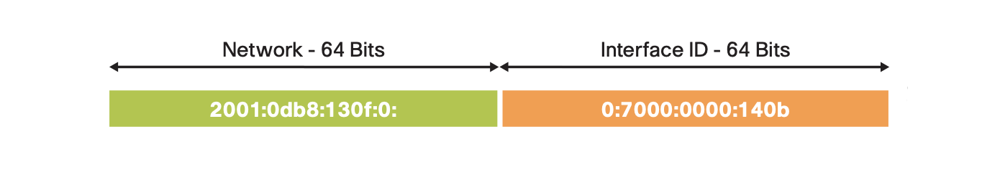
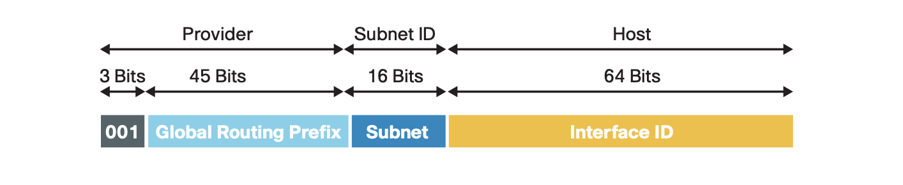
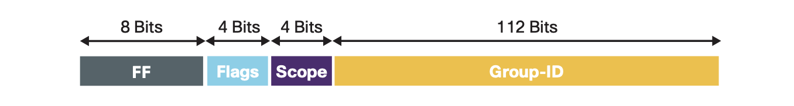

IPv6 Dynamic Address Allocation Mechanism Illustrated
IPv6 supports multiple addresses, making address assignments more flexible and convenient. Unlike IPv4, which relied solely on the DHCP protocol for address assignment, IPv6 incorporates a native Stateless Address AutoConfiguration SLAAC) protocol. SLAAC can either work alone to provide IPv6 addresses to hosts, or it can work with DHCPv6 to generate new assignment schemes. Here is a comprehensive analysis of the dynamic address allocation mechanism for IPv6.
IPv6 Address Overview
Address Formats
The most significant difference between IPv6 and IPv4 is its large address space. IPv4 has 32 bits (4 bytes) and allows for approximately 4.29 (232) billion addresses. IPv6, on the other hand, defines 128 bits (16 bytes) and supports approximately 340 x 1036 addresses. This is a pretty impressive number, and there will be no address depletion for the foreseeable future. A typical IPv6 address can be divided into two parts. As shown in the figure below, the first 64 bits are used to represent the network, and the next 64 bits are used as the interface identifier. 
The interface identifier can be generated in several ways:
- Static manual setting
- Converted from the interface's MAC address using the modified EUI-64 format
- Obtained from a DHCPv6 server
- Automatically established randomly or cryptographically
IETF recommends a canonical textual representation format for ease of writing. It includes leading zeros suppression and compression of consecutive all-zero fields. With the network prefix length at the end, the above address can be shortened to 2001:db8:130f::7000:0:140b/64.
Address Types
RFC 4291 defines three types of addresses:
- Unicast: A network address corresponds to a single network node, point-to-point connection.
- Anycast: The target address corresponds to a group of receiving nodes, but only the "nearest" one receives.
- Multicast: The target address corresponds to a group of nodes that can receive replicated messages.
Note that there are no broadcast addresses in IPv6, their function being superseded by multicast addresses. Anycast addresses are syntactically indistinguishable from unicast addresses and have very limited applications. A typical application for anycast is to set up a DNS root server to allow hosts to look up domain names in close proximity. For unicast and multicast addresses, they can be identified by different network prefixes:
| Address Type | Binary Form | Hexadecimal Form | Application | |
|---|---|---|---|---|
| Link-local address (unicast) | 1111 1110 10 | fe80::/10 | Use on a single link, non-routable | |
| Unique local address (unicast) | 1111 1101 | fd00::/8 | Analogous to IPv4 private network addressing | |
| Global unicast address | 001 | 2000::/3 | Internet communications | |
| Multicast address | 1111 1111 | ff00::/8 | Group communications, video streaming |
Each interface of a host must have a link-local address. Additionally, it can be manually or dynamically autoconfigured to obtain a unique local address and a global unicast address. Thus, IPv6 interfaces naturally have multiple unicast addresses. Unique local addresses are managed by the local network administrator, while the global unicast addresses are allocated by the IANA-designated regional registry. Referring to the following diagram, all current global unicast addresses are assigned from the 2000::/3 address block, with the first 48 bits of the address identifying the service provider's global routing network and the next 16 bits identifying the enterprise or campus internal subnet:  Because an IPv6 multicast address can only be used as a destination address, its bit definition is different from that of unicast. Referring to RFC 4291, a multicast address containing 4 bits of the feature flags, 4 bits of the group scope, and the last 112 bits of the group identifier:  Furthermore the same protocol specifies a few pre-defined IPv6 multicast addresses, the most important of which are
- All Nodes Addresses on the local link — ff02::1
- All Routers Addresses on the local link — ff02::2
- Solicited-Node Address on local link — ff02::1:ffxx:xxxx
Dynamic Allocation Scheme
NDP Protocol
IPv6 dynamic address assignment depends on Neighbor Discovery Protocol (NDP). NDP acts at the data link layer and is responsible for discovering other nodes and corresponding IPv6 addresses on the link and determining available routes and maintaining information reachability to other active nodes. It provides the IPv6 network with the equivalent of the Address Resolution Protocol (ARP) and ICMP router discovery and redirection protocols in IPv4 networks. However, NDP adds many improvements and new features. NDP defines five ICMPv6 message types:
- Router Solicitation (RS)
- Router Advertisement (RA)
- Neighbor Solicitation (NS)
- Neighbor Advertisement (NA)
- Redirect
The first two message types here, RS and RA, are the keys to implementing dynamic IPv6 address assignment. The host sends an RS message to the multicast address ff02::2 of all routers in the local network segment to request routing information. When the router receives the RS from the network node, it sends an immediate RA in response. The message format of the RA is as follows
1 | 0 1 2 3 |
It defines two special bits, M and O, with the following meaning:
- M - "Managed address configuration" flag, set to 1 when the address is obtained from DHCPv6.
- O - "Other configuration" flag, set to 1 to indicate that other configuration information is available via DHCPv6
The RA message ends with the Options section, which originally had three possible options: Source Link-Layer Address, MTU, and Prefix Information. Later, RFC 8106 (which replaced RFC 6106) added the Recursive DNS Server (RDNSS) and DNS Search List (DNSSL) options. The Prefix Information option directly provide hosts with on-link prefixes and prefixes for Address Autoconfiguration, and it has the following format
1 | 0 1 2 3 |
Here the Prefix Length and the Prefix jointly determine the network prefix of the IPv6 address. In addition, the Prefix Information option also defines two special bits, L and A:
- L — on-link flag. When set, indicates that this prefix can be used for on-link determination.
- A — autonomous address-configuration flag. When set, indicates that this prefix can be used for SLAAC.
Similar to the IPv4 subnet mask feature, the purpose of the "on-link" determination is to allow the host to determine which networks an interface can access. By default, the host only considers the network where the link-local address is located as "on-link". If the "on-link" status of a destination address cannot be determined, the host forwards the IPv6 datagram to the default gateway (or default router) by default. When the host receives an RA message, if the "on-link" flag for a prefix information option is set to 1 and the Valid Lifetime is also a non-zero value, the host creates a new prefix network entry for it in the prefix list. All unexpired prefix network entries are "on-link".
Message Sequence
After understanding the NDP protocol and the information conveyed by the RA messages, let's see how they guide the network nodes to achieve dynamic address assignment.
Routers in the network periodically send RA messages to the multicast addresses (ff02::1) of all nodes in the local subnet. However, to avoid latency, the host sends one or more RS messages to all routers in the local subnet as soon as it has finished booting. The protocol requires the routers to respond to the RA messages within 0.5 seconds. Then, based on the values of the M/O/A bits in the received RA messages, the host decides how to dynamically configure the unique local and global unicast addresses of the interface and how to obtain other configuration information. With certain combinations of bit fetch values, the host needs to run DHCPv6 client software to connect to the server to obtain address assignment and/or other configuration information. The entire process is shown in the following message sequence diagram.
sequenceDiagram participant R as Router participant H as Host participant S as DHCPv6 Server Note over R,H: Router Request rect rgb(239, 252, 202) H->>R: Router Solitication R-->>H: Router Advertisement end Note over H,S: Address Request rect rgb(230, 250, 255) H->>S: DHCPv6 Solicit S-->>H: DHCPv6 Advertise H->>S: DHCPv6 Request S-->>H: DHCPv6 Reply end Note over H,S: Other Information Request rect rgb(230, 250, 255) H->>S: DHCPv6 Information-request S-->>H: DHCPv6 Reply end
Note: Unlike the IPv4 DHCP protocol, DHCPv6 clients use UDP port 546 and servers use UDP port 547.
Next explains in detail the three dynamic allocation schemes determined by the combination of the values of the M/O/A bits.
- SLAAC
- SLAAC + Stateless DHCPv6
- Stateful DHCPv6
SLAAC
SLAAC is the simplest automatic IPv6 address assignment scheme and does not require any server. It works by sending an RS message request after the host starts up and the router sends back RA messages to all nodes in the local network segment. If the RA message contains the following configuration
- M-bit and O-bit all clear in the message header
- L-bit and A-bit all set in Prefix Information option
Then the host receives this RA message and performs the following operations to implement SLAAC:
- Combine the network prefix with the local interface identifier to generate a unique local address or global unicast address.
- Install the default gateway (or default route) to point to the router address (source address of the RA message).
- Set this interface as the "on-link" corresponding to the network prefix, which is also the next-hop interface of the default gateway above.
- If the RDNSS and/or DNSSL options are included, install the name servers and domain name suffixes.
This way, the host gets one or more IPv6 unique local addresses or global unicast addresses, as well as the default gateway and domain name service information to complete various Internet connections.
The following is an example of the SLAAC configuration on a Cisco Catalyst 9300 Multilayer Access Switch:
1 | ipv6 unicast-routing |
The Layer 3 interface of the Cisco Multilayer Switch provides routing functionality. As you can see, when IPv6 is activated on the Layer 3 interface in VLAN 10, its default address auto-assignment scheme is SLAAC. the control bits of RA messages from this interface are all set according to the SLAAC scheme, and the network prefixes for each IPv6 address it configures are automatically added to the RA prefix information options list. Of course, the network administrator can also exclude certain network prefixes with a separate interface configuration command. The last two lines of the example configuration command specify RDNSS and DNSSL, which are also added to the RA message options.
If a host connects to a port in VLAN 10, it immediately gets a global unicast address with the network prefix of 2001:ABCD:1000::/64, and its default gateway address is set to 2001:ABCD:1000::1. Open a browser and enter a URL, and it will send a message to the specified domain name server 2001:4860:4860::8888 (Google's public name server address) to obtain the IPv6 address of the destination URL to establish a connection.
SLAAC + Stateless DHCPv6
SLAAC 自动地址分配快捷方便，为中小型网络部署提供了即插即用的 IPv6 部署方案。但是如果网络节点需要获得其他一些配置信息，比如 NTP/SNTP 服务器、TFTP 服务器和 SIP 服务器地址，或者其功能依赖某些厂商特定的信息选项 (Vendor-specific Information Option) 时，就必须选择 SLAAC + 无状态 DHCPv6 的方案。
SLAAC automatic address assignment is fast and easy, providing a plug-and-play IPv6 deployment solution for small and medium-sized network deployments. However, if a network node needs access to additional configuration information, such as NTP/SNTP server, TFTP server, and SIP server addresses, or if its functionality relies on certain Vendor-specific Information Options, it must choose SLAAC + stateless DHCPv6 scheme.
This scenario still uses SLAAC automatic address assignment, but the router instructs the host to connect to a DHCPv6 server for additional configuration information. At this point, the RA message sent back by the router has
- M-bit clear and O-bit set in the message header
- L-bit and A-bit all set in Prefix Information option
After receiving this RA message, the host performs the following actions:
- Combine the network prefix with the local interface identifier to generate a unique local address or global unicast address.
- Install a default gateway (or default route) pointing to the router address (source address of the RA message).
- Set this interface as the "on-link" corresponding to the network prefix, which is also the next-hop interface of the default gateway above.
- If the RDNSS and/or DNSSL options are included, install the name servers and domain name suffixes.
- Start the DHCPv6 client and connect to the DHCPv6 server to request additional configuration information.
- Save the additional configuration information replied by the DHCPv6 server.
As you can see, SLAAC + stateless DHCPv6 is not different from SLAAC in terms of address assignment. DHCPv6 only provides additional configuration information and does not assign IPv6 addresses. So the DHCPv6 server does not track the address assignment status of network nodes, which is what "stateless" means.
The corresponding configuration commands on the Catalyst 9300 switch are as follows.
1 | ipv6 unicast-routing |
The difference with the SLAAC example is that the VLAN 10 interface configuration command ipv6 nd other-config-flag explicitly specifies to set the O-bit of the RA message. Its next command, ipv6 dhcp server vlan-10-clients, activates the DHCPv6 server response feature of the interface, corresponding to the server's pool name of vlan-10-clients. The DHCPv6 server is configured above the interface configuration, starting at ipv6 dhcp pool vlan-10-clients, and contains the DNS server address, DNS domain name, and SNTP server address.
If you are using a separate DHCPv6 server located on a network segment, you can remove the ipv6 dhcp server command and enable the ipv6 dhcp relay destination command on the next line of the example to specify the address to forward DHCPv6 requests to the external server.
Stateful DHCPv6
Many large enterprises use DHCP to manage the IPv4 addresses of their devices, so deploying DHCPv6 to centrally assign and manage IPv6 addresses is a natural preference. This is where Stateful DHCPv6 comes into play. This scenario also requires RA messages sent by the router but does not rely solely on network prefixes for automatic address assignment. The control bits of the RA messages are configured to
- M-bit set in the message header, O-bit does not matter
- L-bit and A-bit can be set or clear as desired in Prefix Information option
Upon receiving this RA message, the host performs the following actions:
- Generate a unique local address or a global unicast address if there is a prefix information option A with a ratio of 1
- Install a default gateway (or default route) pointing to the router address (source address of the RA message)
- If there is a Prefix Information option with L-bit set, set this interface to "on-link" with the corresponding network prefix.
- If the RDNSS and/or DNSSL options are included, install the name servers and domain suffixes.
- Start the DHCPv6 client and connect to the server to request addresses and other configuration information.
- Set the address assigned by the DHCPv6 server to this interface.
- Save additional configuration information from the DHCPv6 server response
An example of the Stateful DHCPv6 configuration command on a Catalyst 9300 switch is as follows.
1 | ipv6 unicast-routing |
Compared to SLAAC + Stateless DHCPv6, the interface configuration here removes the ipv6 nd other-config-flag and replaces it with the ipv6 nd managed-config-flag command. This corresponds to setting the M-bit of the RA message header. The DHCPv6 server configuration adds two address prefix commands to set the network prefix. Also, the ipv6 nd prefix 2001:ABCD:1:1::/64 no-advertise configured for the interface specifies that the router does not include the 2001:ABCD:1:1::/64 prefix information option into the RA. So, this example host interface will not generate SLAAC addresses, but only two addresses from DHPCv6: a unique local address with the network prefix FD09:9:5:90::/64, and a global unicast address with the network prefix 2001:9:5:90::/64. The interface identifier for each of these two addresses is also specified by DHPCv6.
How to distinguish the source of dynamically assigned addresses for host interfaces? The method is simple. One thing to remember is that DHPCv6 does not send the network prefix length to the requestor, so the network prefix length of the addresses received from DHPCv6 is 128, while the network prefix length of the addresses generated by SLAAC will not be 128. See the following example of the wired0 interface on a Linux host:
1 | ifconfig wired0 |
We can immediately determine that the interface is using Stateful DHCPv6 address assignment, but also generates the SLAAC address with the same network prefix 2001:20::/64 received.
- 2001:20::53c7:1364:a4d8:fd91/128 — DHCPv6 address, random interface identifer
- 2001:20::a2ec:f9ff:fe6c:d930/64 — SLAAC addeess, interface identifer is MAC in EUI-64 format
- fe80::a2ec:f9ff:fe6c:d930/64 — Link-local address, interface identifer is MAC in EUI-64 format
注意：DHPCv6 服务器也不提供任何 IPv6 默认网关信息，主机需要从 RA 消息获知动态默认网关。
Summary and Comparison
下表列出了 RA 消息的控制比特组合与地址分配和其他配置获取方式的关系： The following table shows the control bit combinations of RA messages concerning different address allocation and other configuration acquisition methods.
| M-bit | O-bit | A-bit | Host Address | Other Configuration |
|---|---|---|---|---|
| 0 | 0 | 0 | Static Settings | Manual Configuration |
| 0 | 0 | 1 | Prefix specified by RA, automatically generated | manually configured |
| 0 | 1 | 0 | Static Settings | DHCPv6 |
| 0 | 1 | 1 | Prefix specified by RA, automatically generated | DHCPv6 |
| 1 | 0 | 0 | Stateful DHCPv6 | DHCPv6 |
| 1 | 0 | 1 | Stateful DHCPv6 and/or automatically generated | DHCPv6 |
| 1 | 1 | 0 | Stateful DHCPv6 | DHCPv6 |
| 1 | 1 | 1 | Stateful DHCPv6 and/or automatically generated | DHCPv6 |
Summarize three dynamic allocation schemes:
| Allocation Scheme | Features | Appiccation Scenarios |
|---|---|---|
| SLAAC | Simple and practical, fast deployment | SMB, Consumer Product Networking, Internet of Things (IoT) |
| SLAAC + Stateless DHCPv6 | Auto Configuration, Extended Services | SMBs need additional network services |
| Stateful DHCPv6 | Centralized management and control | Large enterprises, institutions, and campus networks |
Note: Since IPv6 network interfaces can have multiple addresses (a link-local address, plus one or more unique local addresses and/or global unicast addresses), it becomes important how the source address is selected when establishing an external connection. RFC 6724 gives detailed rules for IPv6 source address selection. In the development of embedded systems, the control plane and the data plane connected to the same remote device are often implemented by different functional components. For example, the control plane directly calls a Linux userspace socket to establish the connection, and the IPv6 source address used for the connection is selected by the TCP/IP stack, while the data plane directly implements data encapsulation processing and transmission in kernel space. In this case, the IPv6 source address selected by the control plane has to be synchronized to the data plane in time, otherwise, the user data might not be delivered to the same destination.
Troubleshooting Guide
The common IPv6 dynamic address assignment debugging and troubleshooting commands on Cisco routers and switches are listed in the following table.
| Command | Description |
|---|---|
show ipv6 interface brief |
Displays a short summary of IPv6 status and configuration for each interface |
show ipv6 interface [type] [num] |
Displays IPv6 and NDP usability status information for single interface |
show ipv6 interface [type] [num] prefix |
Displays IPv6 network prefix information for single interface |
show ipv6 dhcp pool |
Display DHCPv6 configuration pool information |
show ipv6 dhcp binding |
Displays all automatic client bindings from the DHCPv6 server binding table |
show ipv6 dhcp interface [type] [num] |
Display DHCPv6 interface information |
debug ipv6 nd |
Debug IPv6 NDP protocol |
debug ipv6 dhcp |
Debug DHCPv6 server |
The following console NDP protocol debug log shows that the router received an RS message from host FE80::5850:6D61:1FB:EF3A and responded with an RA message to the multicast address FF02::1 of all nodes in this network:
1 | Router# debug ipv6 nd |
And the next log shows an example of Stateless DHCPv6 observed after entering the debug ipv6 dhcp debug command. Host FE80::5850:6D61:1FB:EF3A sends an INFORMATION-REQUEST message to the DHCPv6 server, which selects the source address FE80::C801:B9FF:FEF0:8 and sends a response message.
1 | Router#debug ipv6 dhcp |
The following debug log of Stateful DHCPv6 shows the complete process of two message exchanges (SOLICIT/ADVERTISE, REQUEST/REPLY) on lines 1, 15, 16, and 26.
1 | IPv6 DHCP: Received SOLICIT from FE80::5850:6D61:1FB:EF3A on FastEthernet0/0 |
For complex cases where it is difficult to identify whether the problem is with the host, router, or DHCPv6 server, we recommend using the free open-source network packet analysis software Wireshark to capture packets of the entire process for analysis. While analyzing packets with Wireshark, you can apply the keyword filtering function.
| Filter String | Only Show |
|---|---|
| icmpv6.type=133 | ICMPv6 RS |
| icmpv6.nd.ra.flag | ICMPv6 RA |
| dhcpv6 | DHCPv6 packets |
We can either run Wireshark directly on the host side, or we can use the Switched Port Analyzer (SPAN) provided with the switch. Running on the network side, SPAN can collectively redirect packets from a given port to the monitor port running Wireshark for capturing. Cisco Catalyst 9300 Series switches also directly integrate with Wireshark software to intercept and analyze filtered packets online, making it very easy to use.
Sample packet capture files for three allocation scheme are available here for download and study: slaac.pcap，stateless-dhcpv6.pcap，stateful-dhcpv6.pcap
References
IPv6 Product Certification Test
Accurate and effective testing of IPv6 products is key to ensuring high interoperability, security, and reliability of IPv6 infrastructure deployments. The IPv6 Ready logo is an IPv6 testing and certification program created by the IPv6 Forum. Its goals are to define IPv6 conformance and interoperability test specifications, provide a self-testing toolset, establish Global IPv6 Test Centers and provide product validation services, and finally, issue IPv6 Ready logo.
In May 2020, IPv6 Ready Logo Program published new version 5.0 test specifications：
- IPv6 Core Protocols Test Specification (Conformance)
- IPv6 Core Protocols Interoperability Test Specification (Interoperability)
Along with these two new test specifications, the project team also affirmed two permanent changes:
- Testing must be done in an IPv6-only environment, without any IPv4 being used for the device to function.
- The device under test must have IPv6 on and enabled on all IP interfaces by default.
Not surprisingly, the new version 5.0 core protocols test specification has a section dedicated to defining SLAAC test cases to validate this core IPv6 protocol.
IPv6 Core Protocol RFC List
In the list below, the RFCs shown in bold are directly covered by the IPv6 Ready Version 5.0 Core Protocol Test Specification:
- RFC 4191 Default Router Preferences and More-Specific Routes
- RFC 4193 Unique Local IPv6 Unicast Addresses
- RFC 4291 IP Version 6 Addressing Architecture
- RFC 4443 Internet Control Message Protocol (ICMPv6) for the Internet Protocol Version 6 (IPv6) Specification
- RFC 4861 Neighbor Discovery for IP version 6 (IPv6)
- RFC 4862 IPv6 Stateless Address Autoconfiguration
- RFC 4941 Privacy Extensions for Stateless Address Autoconfiguration in IPv6
- RFC 5095 Deprecation of Type 0 Routing Headers in IPv6
- RFC 6724 Default Address Selection for Internet Protocol Version 6 (IPv6)
- RFC 6980 Security Implications of IPv6 Fragmentation with IPv6 Neighbor Discovery
- RFC 7217 A Method for Generating Semantically Opaque Interface Identifiers with IPv6 Stateless Address Autoconfiguration (SLAAC)
- RFC 8064 Recommendation on Stable IPv6 Interface Identifiers
- RFC 8106 IPv6 Router Advertisement Options for DNS Configuration
- RFC 8200 Internet Protocol, Version 6 (IPv6) Specification
- RFC 8201 Path MTU Discovery for IP version 6
- RFC 8415 Dynamic Host Configuration Protocol for IPv6 (DHCPv6)